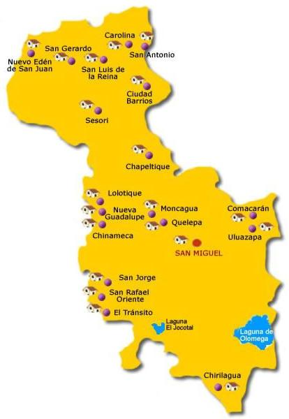

Rasgos fisicos mas notables del departamento: La Sierra Tecapa-Chinameca (division orografica de la Cadera Costera Central): se eleva desde la margen izquierda del rio Lempa y finaliza en el curso medio del rio Grande de San Miguel, sus elevaciones orograficas mas notables son los cerros Taburete, Tigre, Oromontique y los volcanes de Tecapa, Usulutan y Jucuapa en el departamento de Usulutan y los volcanes de Chinameca y San Miguel. La cordillera Cacahuatique-Coroban: La cordillera de Cacahuatique-Joroban se extiende entre los departamentos de San Miguel y Morazan, su rasgo orografico mas notable es el cerro Cacahuatique. La cordillera meridional Jucuaran-Intipuca-La Paz: desciende desde el extremo oriental de la bahia de Jiquilisco al Golfo de Fonseca, en el departamento de San Miguel(municipio de Chirilagüa), presenta los cerros Mico Peinado, Tablas, Nariz del Diablo, y otros. Los valles fluviales de los rios Torola, Lempa, Sesori y Grande de San Miguel.
Entre los sitios de turismo mas notables se encuentran la playa del Cuco; el turicentro “Altos de La Cueva”; Parque Recreativo Montegrande; ruinas arqueologicas de Moncagua, Quelepa y Uluazapa; y los ausoles de Chinameca, San Jorge y Carolina.
En cuanto a los deportes, San Miguel es representado en la Primera Division de El Salvador por el Club Deportivo Aguila, entidad que ha logrado un total de 15 titulos. Tambien tiene su asiento el Club Deportivo Dragon de la Segunda Division de Futbol Salvadoreño.
Por otro lado, el Carnaval de San Miguel es uno de los festejos populares mas importantes de El Salvador que tiene lugar, cada mes de noviembre, durante las fiestas patronales de la ciudad cabecera.
Regresar